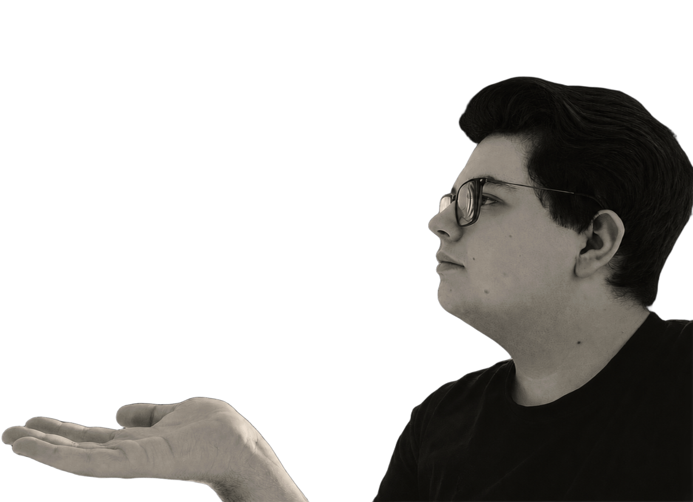
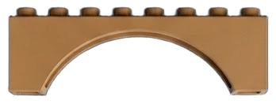
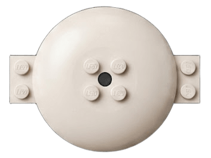
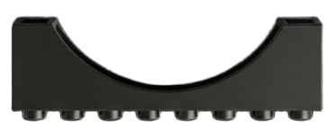
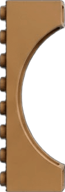

FAIRE DE LA CONSTRUCTION EN BRIQUES UN LANGAGE CRÉATIF CAPABLE DE MATÉRIALISER L'IDENTITÉ, LES PASSIONS ET LES RÉCITS DE CHACUN À TRAVERS DES ŒUVRES UNIQUES ET INTEMPORELLES.

PASSIONNÉ DEPUIS L'ENFANCE PAR L'UNIVERS DE LA BRIQUES, CORENTIN A PROGRESSIVEMENT DÉVELOPPÉ UNE VISION ALLANT AU-DELÀ DU SIMPLE LOISIR. CONVAINCU QUE LES CONSTRUCTIONS SONT DE VÉRITABLES SUPPORTS DE MÉMOIRE, IL S'EST FORMÉ À LA CONCEPTION DE MODÈLES ORIGINAUX ET AUX OUTILS DE MODÉLISATION 3D.
EN 2026, IL FONDE VATHINI AVEC UNE AMBITION SIMPLE : TRANSFORMER DES SOUVENIRS, DES LIEUX ET DES HISTOIRES EN CRÉATIONS PERSONNALISÉES CAPABLES DE TRAVERSER LE TEMPS. CHAQUE PROJET EST CONÇU COMME UNE RENCONTRE ENTRE PRÉCISION TECHNIQUE, SENSIBILITÉ ARTISTIQUE ET PATRIMOINE ÉMOTIONNEL.

LA MISSION DE VATHINI, RÉSUMÉE PAR LE SLOGAN « BUILD YOUR DREAM », EST DE TRANSFORMER LES ÉMOTIONS, LES SOUVENIRS ET L'IMAGINAIRE EN ŒUVRES TANGIBLES ET DURABLES À TRAVERS L'ART DE LA CONSTRUCTION EN BRIQUES. EN CONJUGUANT EXCELLENCE TECHNIQUE ET ESTHÉTIQUE RAFFINÉE, NOUS OFFRONS UNE EXPÉRIENCE « SLOW LIVING » QUI INVITE À SE DÉCONNECTER DU NUMÉRIQUE POUR REDÉCOUVRIR LE PLAISIR MANUEL. PLUS QU'UN SIMPLE ASSEMBLAGE DE BRIQUES, VATHINI SE DONNE POUR VOCATION DE BÂTIR DES OBJETS PORTEURS DE SENS ET D'HISTOIRE, VALORISANT AINSI CHAQUE DÉTAIL COMME UN HOMMAGE À LA CRÉATIVITÉ ET AU PARTAGE D'UNE PASSION INTEMPORELLE.
LA CRÉATIVITÉ EST LE MOTEUR DE VATHINI. ELLE NE SE LIMITE PAS À L'ASSEMBLAGE DE BRIQUES, MAIS ENCOURAGE L'INNOVATION DANS LA CONCEPTION ET LA PERSONNALISATION. CETTE VALEUR JUSTIFIE NOTRE VOLONTÉ DE REPOUSSER LES LIMITES DU POSSIBLE, EN OFFRANT AUX UTILISATEURS LES OUTILS ET L'INSPIRATION NECESSAIRES POUR TRANSFORMER DES IDÉES ABSTRAITES EN STRUCTURES TANGIBLES ET UNIQUES.
LA TRANSMISSION EST AU CŒUR DE LA PHILOSOPHIE DE VATHINI. CHAQUE CRÉATION EST PENSÉE COMME UN OBJET DURABLE DESTINÉ À PRÉSERVER ET À PARTAGER UNE HISTOIRE, UN SOUVENIR OU UN PATRIMOINE AU-DELÀ DU PRÉSENT. CETTE VALEUR JUSTIFIE NOTRE VOLONTÉ DE CONCEVOIR DES RÉALISATIONS INTEMPORLLES, CAPABLES DE TRAVERSER LES GÉNÉRATIONS ET DE DEVENIR LES TÉMOINS MATÉRIELS D'ÉMOTIONS, DE LIEUX OU DE MOMENTS SIGNIFICATIFS.
LA FIDÉLITÉ EST LE SOCLE DE NOTRE RELATION AVEC NOTRE COMMUNAUTÉ. ELLE SE MANIFESTE PAR UNE DOBLE EXIGENCE : LA FIDÉLITÉ AUX DESIGNS ORIGINAUX ET AUX STANDARDS DE QUALITÉ ÉLEVÉS, MAIS AUSSI L'ENGAGEMENT DURABLE ENVERS NOS CLIENTS. CETTE VALEUR JUSTIFIE NOTRE ÉTHIQUE DE TRAVAIL, LA TRANSPARENCE DE NOS PROCESSUS ET NOTRE VOLONTÉ DE BÂTIR UNE RELATION DE CONFIANCE QUI RÈSISTE À L' ÉPREUVE DU TEMPS.
L'ÉLÉGANCE DÉFINIT L'ESTHÉTIQUE ET LA PHILOSOPHIE DE VATHINI. ELLE SE TRADUIT PAR UNE APPROCHE DU DESIGN ÉPUREE, RAFFINÉE ET INTEMPORIELLE, OÙ CHAQUE PIÈCE TROUVE SA PLACE AVEC HARMONIE. CETTE VALEUR JUSTIFIE NOTRE RECHERCHE CONSTANTE DE L'ÉQUILIBRE PARFAIT ENTRE COMPLEXITÉ TECHNIQUE ET SOBRIÉTÉ VISUELLE, FAISANT DE CHAQUE CRÉATION VATHINI UN OBJET DE DÉCORATION AUTANT QU'UN EXPLOIT DE CONSTRUCTION.